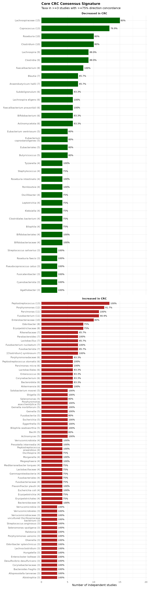
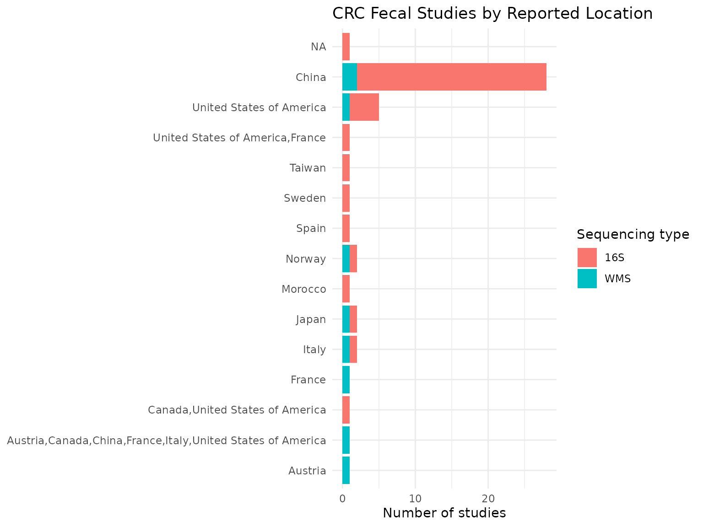
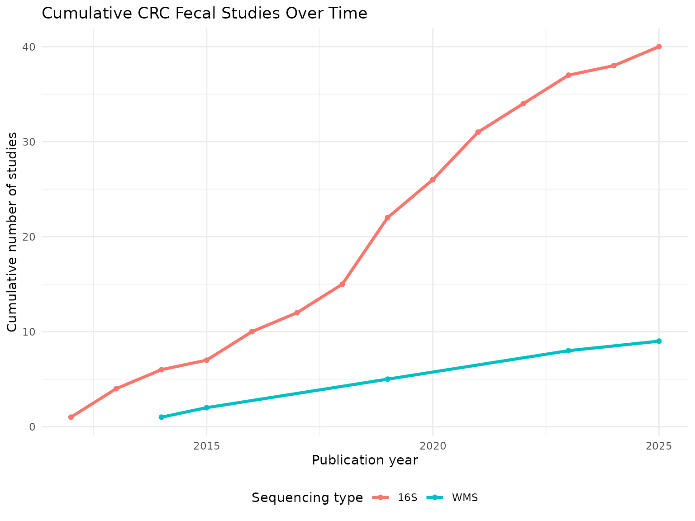
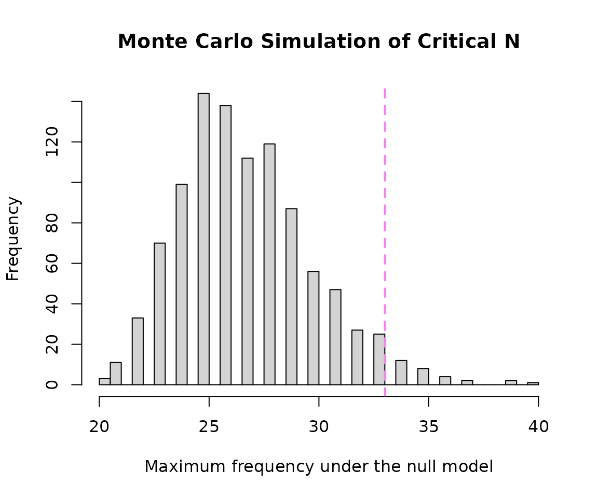

Exploratory Analysis of Colorectal Cancer (CRC) Microbial Signatures
Sally Karimi Kinyua
Source:vignettes/Colorectal_Cancer_Analysis_vignette.Rmd
Colorectal_Cancer_Analysis_vignette.RmdIntroduction
This vignette demonstrates an exploratory analysis of microbial signatures associated with colorectal cancer (CRC) using data obtained from BugSigDB and functions provided by the bugSigSimple package.
Analysis objectives
- Downloading the data from BugSigDB
- Filtering of the data to select relevant signatures and remove similar/duplicate signatures
- Restricting to fecal samples (the body site with the most consistent, human, non-tissue evidence)
- Description of the studies
- Description of the taxa
- Basic statistical tests
- Monte Carlo simulation to calculate critical N
- Heatmaps and dendrograms
Making sure packages are installed
if (!require("BiocManager", quietly = TRUE))
install.packages("BiocManager")
BiocManager::install(c("devtools", "tidyverse", "kableExtra"))
BiocManager::install(c("waldronlab/bugSigSimple", "waldronlab/BugSigDBStats", "waldronlab/bugsigdbr"))Download BugSigDB data
full.dat <- bugsigdbr::importBugSigDB(cache = FALSE)
dim(full.dat)## [1] 7425 51The BugSigDB database was downloaded using the
importBugSigDB() function from the
bugsigdbr package. The result contains all curated
microbial signatures together with study metadata such as disease, body
site, sequencing platform, and abundance direction.
Remove empty signatures
ind1 <- lengths(full.dat[["MetaPhlAn taxon names"]]) > 0
ind2 <- lengths(full.dat[["NCBI Taxonomy IDs"]]) > 0
dat <- full.dat[ind1 & ind2, ]
dim(dat)## [1] 7425 51Signatures without annotated taxa were removed to ensure that only complete microbial signatures were included in downstream analyses.
Select CRC-related signatures
pattern <- paste(
"Colorectal cancer",
"Colorectal Neoplasms",
"Colorectal carcinoma",
"Colorectal adenocarcinoma",
"Colonic Neoplasms",
"Rectal Neoplasms",
"Colorectal adenoma",
"Colorectal polyp",
"colon cancer",
"rectal cancer",
"CRC",
sep = "|"
)
crc.dat <- dat %>%
filter(
grepl(pattern, Condition, ignore.case = TRUE) |
grepl(pattern, `Group 0 name`, ignore.case = TRUE) |
grepl(pattern, `Group 1 name`, ignore.case = TRUE)
) %>%
filter(
grepl(pattern, Condition, ignore.case = TRUE)
)
nrow(crc.dat)## [1] 304## Condition n
## 1 Colorectal cancer 227
## 2 Colorectal adenoma 33
## 3 Colorectal carcinoma 13
## 4 Colorectal adenocarcinoma 9
## 5 Metastatic colorectal cancer 7
## 6 Colorectal cancer,Diabetes mellitus 5
## 7 Nutraceutical,Colorectal cancer 4
## 8 Colorectal adenoma,Colorectal cancer 2
## 9 Colorectal cancer cell line 2
## 10 Colorectal cancer,Nutraceutical 2To capture the complete body of evidence related to colorectal cancer (CRC), signatures were identified using both the primary disease terminology (colorectal cancer / neoplasms) and related terms covering adenomas, polyps, and site-specific variants (colon/rectal cancer). Disease-related terms were searched across the Condition, Group 0 name, and Group 1 name fields to recover studies curated under different naming conventions. Finally, only records whose primary condition corresponded to a CRC-related disease were retained.
Remove similar signatures
## [1] 304Exact duplicate records were removed using distinct() to
reduce redundancy before downstream analyses. This step retains unique
CRC-associated microbial signatures while preserving the overall study
representation.
Restrict to fecal samples
| Body site | n |
|---|---|
| Feces | 194 |
| Intestine | 41 |
| Colon | 17 |
| Colorectum | 15 |
| Colorectal mucosa | 12 |
| Oral cavity | 10 |
| Saliva | 9 |
| Intestinal mucosa | 4 |
| Mucosa of ascending colon | 2 |
# Feces is the dominant, human, non-tissue body site in the CRC signatures.
# One study (PMID 26397137) used a mouse model rather than human subjects and
# is excluded so that the signature set reflects human fecal microbiome findings.
crc.filtered <- crc.filtered %>%
filter(`Body site` == "Feces") %>%
filter(PMID != 26397137)
nrow(crc.filtered)## [1] 192CRC signatures in BugSigDB were curated from several body sites, including feces, mucosal tissue, and oral samples, as well as from a small number of mouse studies. To keep the downstream comparisons consistent, the analysis was restricted to fecal signatures from human studies, which represent the largest and most directly comparable body of evidence for the gut microbiome in CRC.
Study characteristics
| Body site | Sequencing type | n |
|---|---|---|
| Feces | 16S | 146 |
| Feces | WMS | 46 |
The selected CRC fecal signatures span multiple studies and sequencing approaches. Summarizing study characteristics provides context for interpreting downstream analyses and highlights the diversity of experimental designs represented in BugSigDB.
Taxonomic summary
taxa.table <- createTaxonTable(crc.filtered)
head(taxa.table)## # A tibble: 6 × 6
## `Taxon Name` `Taxonomic Level` total_signatures increased_signatures
## <chr> <chr> <int> <int>
## 1 Lachnospiraceae family 24 6
## 2 Peptostreptococcus genus 24 24
## 3 Parvimonas genus 23 23
## 4 Bacteroides genus 19 10
## 5 Clostridium genus 18 6
## 6 Ruminococcus genus 18 9
## # ℹ 2 more variables: decreased_signatures <int>, `Binomial Test pval` <dbl>| Taxon Name | Taxonomic Level | total_signatures | increased_signatures | decreased_signatures | Binomial Test pval |
|---|---|---|---|---|---|
| Lachnospiraceae | family | 24 | 6 | 18 | 2.3e-02 |
| Peptostreptococcus | genus | 24 | 24 | 0 | 1.0e-07 |
| Parvimonas | genus | 23 | 23 | 0 | 2.0e-07 |
| Bacteroides | genus | 19 | 10 | 9 | 1.0e+00 |
| Clostridium | genus | 18 | 6 | 12 | 2.4e-01 |
| Ruminococcus | genus | 18 | 9 | 9 | 1.0e+00 |
| Pseudomonadota | phylum | 18 | 8 | 10 | 8.1e-01 |
| Porphyromonas | genus | 17 | 15 | 2 | 2.3e-03 |
| Rikenellaceae | family | 17 | 11 | 6 | 3.3e-01 |
| Coprococcus | genus | 16 | 4 | 12 | 7.7e-02 |
The taxonomic summary identifies microorganisms that recur across CRC-associated signatures. Frequently reported taxa may represent microbial features that are consistently observed across independent CRC studies.
Split by sequencing type
crc.wms <- crc.filtered %>% filter(`Sequencing type` == "WMS")
crc.16s <- crc.filtered %>% filter(`Sequencing type` == "16S")
cat("WMS - signatures:", nrow(crc.wms), "| studies:", n_distinct(crc.wms$PMID), "\n")## WMS - signatures: 46 | studies: 9
cat("16S - signatures:", nrow(crc.16s), "| studies:", n_distinct(crc.16s$PMID), "\n")## 16S - signatures: 146 | studies: 40Splitting by sequencing platform makes it possible to check later whether whole-metagenome shotgun (WMS) and 16S rRNA studies agree on the direction of the taxa they report.
Long-format taxon table
sigs.feces <- bugsigdbr::getSignatures(crc.filtered, tax.id.type = "taxname")
taxon.long <- purrr::map_dfr(seq_along(sigs.feces), function(i) {
taxa <- sigs.feces[[i]]
if (length(taxa) == 0) return(NULL)
tibble::tibble(sig_id = i, taxon = taxa)
}) %>%
left_join(
crc.filtered %>%
mutate(sig_id = row_number()) %>%
select(sig_id, PMID, Condition, `Sequencing type`, `Abundance in Group 1`),
by = "sig_id"
) %>%
rename(direction = `Abundance in Group 1`)
nrow(taxon.long)## [1] 1960Each signature was expanded into one row per taxon and joined back to its study metadata (PMID, condition, sequencing type, and reported direction). This long-format table underlies all of the frequency, concordance, enrichment, and co-occurrence analyses below.
Taxon frequency across studies
taxon.freq <- taxon.long %>%
distinct(PMID, taxon, direction) %>%
count(taxon, direction, name = "n_studies") %>%
group_by(taxon) %>%
mutate(total_studies = sum(n_studies)) %>%
ungroup() %>%
arrange(desc(total_studies))
n_distinct(taxon.freq$taxon)## [1] 639
taxon.freq %>%
distinct(taxon, total_studies) %>%
slice_max(total_studies, n = 10) %>%
knitr::kable()| taxon | total_studies |
|---|---|
| Lachnospiraceae | 18 |
| Bacteroides | 13 |
| Coprococcus | 13 |
| Peptostreptococcus | 13 |
| Phascolarctobacterium | 13 |
| Ruminococcus | 13 |
| Clostridium | 12 |
| Porphyromonas | 12 |
| Fusobacterium | 11 |
| Parvimonas | 11 |
| Streptococcus | 11 |
The most frequently reported taxa give a first impression of which microbes are consistently associated with CRC across independent studies, before accounting for direction of change or statistical significance.
Core consensus signature
concordance <- taxon.long %>%
distinct(PMID, taxon, direction) %>%
group_by(taxon) %>%
summarise(
n_studies = n_distinct(PMID),
n_increased = sum(direction == "increased"),
n_decreased = sum(direction == "decreased"),
concordance_pct = round(max(n_increased, n_decreased) / n_studies * 100, 1),
majority_dir = if_else(n_increased >= n_decreased, "increased", "decreased"),
.groups = "drop"
) %>%
arrange(desc(n_studies), desc(concordance_pct))
# Formal threshold for a "core" signature: reported in at least 3 independent
# studies, with at least 75% of those studies agreeing on direction
core.sig <- concordance %>%
filter(n_studies >= 3, concordance_pct >= 75) %>%
arrange(majority_dir, desc(n_studies))
nrow(core.sig)## [1] 102
knitr::kable(core.sig)| taxon | n_studies | n_increased | n_decreased | concordance_pct | majority_dir |
|---|---|---|---|---|---|
| Lachnospiraceae | 15 | 6 | 12 | 80.0 | decreased |
| Coprococcus | 13 | 3 | 10 | 76.9 | decreased |
| Clostridium | 10 | 4 | 8 | 80.0 | decreased |
| Roseburia | 10 | 2 | 8 | 80.0 | decreased |
| Clostridia | 9 | 1 | 8 | 88.9 | decreased |
| Lachnospira | 9 | 2 | 8 | 88.9 | decreased |
| Faecalibacterium | 8 | 1 | 8 | 100.0 | decreased |
| Anaerobutyricum hallii | 7 | 1 | 6 | 85.7 | decreased |
| Blautia | 7 | 1 | 6 | 85.7 | decreased |
| Faecalibacterium prausnitzii | 6 | 1 | 6 | 100.0 | decreased |
| Lachnospira eligens | 6 | 0 | 6 | 100.0 | decreased |
| Actinomycetota | 6 | 1 | 5 | 83.3 | decreased |
| Bifidobacterium | 6 | 2 | 5 | 83.3 | decreased |
| Subdoligranulum | 6 | 1 | 5 | 83.3 | decreased |
| Butyricicoccus | 5 | 2 | 4 | 80.0 | decreased |
| Eubacteriales | 5 | 1 | 4 | 80.0 | decreased |
| Eubacterium coprostanoligenes | 5 | 1 | 4 | 80.0 | decreased |
| Eubacterium ventriosum | 5 | 1 | 4 | 80.0 | decreased |
| Bifidobacteriaceae | 4 | 0 | 4 | 100.0 | decreased |
| Bifidobacteriales | 4 | 0 | 4 | 100.0 | decreased |
| Romboutsia | 4 | 0 | 4 | 100.0 | decreased |
| Roseburia intestinalis | 4 | 0 | 4 | 100.0 | decreased |
| Tyzzerella | 4 | 0 | 4 | 100.0 | decreased |
| Bilophila | 4 | 2 | 3 | 75.0 | decreased |
| Clostridiales bacterium | 4 | 2 | 3 | 75.0 | decreased |
| Klebsiella | 4 | 1 | 3 | 75.0 | decreased |
| Leptotrichia | 4 | 1 | 3 | 75.0 | decreased |
| Oscillibacter | 4 | 1 | 3 | 75.0 | decreased |
| Staphylococcus | 4 | 1 | 3 | 75.0 | decreased |
| Agathobacter | 3 | 0 | 3 | 100.0 | decreased |
| Cyanobacteriota | 3 | 1 | 3 | 100.0 | decreased |
| Fusicatenibacter | 3 | 0 | 3 | 100.0 | decreased |
| Pseudocoprococcus catus | 3 | 0 | 3 | 100.0 | decreased |
| Roseburia faecis | 3 | 1 | 3 | 100.0 | decreased |
| Streptococcus salivarius | 3 | 0 | 3 | 100.0 | decreased |
| Peptostreptococcus | 13 | 13 | 0 | 100.0 | increased |
| Porphyromonas | 12 | 11 | 1 | 91.7 | increased |
| Parvimonas | 11 | 11 | 0 | 100.0 | increased |
| Fusobacterium | 11 | 10 | 1 | 90.9 | increased |
| Enterobacteriaceae | 10 | 8 | 2 | 80.0 | increased |
| Erysipelotrichaceae | 8 | 6 | 4 | 75.0 | increased |
| Odoribacter | 8 | 6 | 3 | 75.0 | increased |
| Fusobacterium nucleatum | 7 | 7 | 0 | 100.0 | increased |
| Parabacteroides | 7 | 7 | 1 | 100.0 | increased |
| [Clostridium] symbiosum | 7 | 7 | 1 | 100.0 | increased |
| Fusobacteriota | 7 | 6 | 1 | 85.7 | increased |
| Lactobacillus | 7 | 6 | 2 | 85.7 | increased |
| Rikenellaceae | 7 | 6 | 2 | 85.7 | increased |
| Akkermansia | 6 | 6 | 1 | 100.0 | increased |
| Parvimonas micra | 6 | 6 | 0 | 100.0 | increased |
| Peptostreptococcus stomatis | 6 | 6 | 0 | 100.0 | increased |
| Bacteroidota | 6 | 5 | 1 | 83.3 | increased |
| Corynebacterium | 6 | 5 | 1 | 83.3 | increased |
| Enterococcus | 6 | 5 | 2 | 83.3 | increased |
| Lactobacillales | 6 | 5 | 2 | 83.3 | increased |
| Porphyromonadaceae | 6 | 5 | 1 | 83.3 | increased |
| Actinomyces | 5 | 5 | 1 | 100.0 | increased |
| Bilophila wadsworthia | 5 | 5 | 0 | 100.0 | increased |
| Eggerthella | 5 | 5 | 0 | 100.0 | increased |
| Escherichia | 5 | 5 | 1 | 100.0 | increased |
| Gemella | 5 | 5 | 0 | 100.0 | increased |
| Gemella morbillorum | 5 | 5 | 0 | 100.0 | increased |
| Porphyromonas asaccharolytica | 5 | 5 | 0 | 100.0 | increased |
| Shigella | 5 | 5 | 1 | 100.0 | increased |
| Solobacterium moorei | 5 | 5 | 0 | 100.0 | increased |
| Bacilli | 5 | 4 | 1 | 80.0 | increased |
| Fusobacteriia | 5 | 4 | 1 | 80.0 | increased |
| Selenomonas | 5 | 4 | 1 | 80.0 | increased |
| Bacteroidaceae | 4 | 4 | 0 | 100.0 | increased |
| Escherichia coli | 4 | 4 | 0 | 100.0 | increased |
| Flavonifractor plautii | 4 | 4 | 0 | 100.0 | increased |
| Megasphaera | 4 | 4 | 0 | 100.0 | increased |
| Morganella | 4 | 4 | 1 | 100.0 | increased |
| Peptostreptococcus anaerobius | 4 | 4 | 0 | 100.0 | increased |
| Prevotella intermedia | 4 | 4 | 0 | 100.0 | increased |
| Verrucomicrobiota | 4 | 4 | 2 | 100.0 | increased |
| Erysipelotrichales | 4 | 3 | 1 | 75.0 | increased |
| Erysipelotrichia | 4 | 3 | 1 | 75.0 | increased |
| Fusobacteriaceae | 4 | 3 | 1 | 75.0 | increased |
| Fusobacteriales | 4 | 3 | 1 | 75.0 | increased |
| Gammaproteobacteria | 4 | 3 | 1 | 75.0 | increased |
| Lactobacillaceae | 4 | 3 | 2 | 75.0 | increased |
| Mediterraneibacter torques | 4 | 3 | 1 | 75.0 | increased |
| Oscillospira | 4 | 3 | 1 | 75.0 | increased |
| Abiotrophia | 3 | 3 | 1 | 100.0 | increased |
| Alloprevotella tannerae | 3 | 3 | 0 | 100.0 | increased |
| Bacteroides fragilis | 3 | 3 | 0 | 100.0 | increased |
| Corynebacteriaceae | 3 | 3 | 0 | 100.0 | increased |
| Desulfovibrio desulfuricans | 3 | 3 | 0 | 100.0 | increased |
| Enterocloster bolteae | 3 | 3 | 0 | 100.0 | increased |
| Hungatella | 3 | 3 | 0 | 100.0 | increased |
| Lachnoclostridium | 3 | 3 | 0 | 100.0 | increased |
| Odoribacter splanchnicus | 3 | 3 | 0 | 100.0 | increased |
| Olsenella | 3 | 3 | 0 | 100.0 | increased |
| Porphyromonas uenonis | 3 | 3 | 0 | 100.0 | increased |
| Ralstonia | 3 | 3 | 0 | 100.0 | increased |
| Selenomonas sputigena | 3 | 3 | 0 | 100.0 | increased |
| Streptococcus anginosus | 3 | 3 | 0 | 100.0 | increased |
| Verrucomicrobiaceae | 3 | 3 | 1 | 100.0 | increased |
| Verrucomicrobiales | 3 | 3 | 1 | 100.0 | increased |
| Verrucomicrobiia | 3 | 3 | 1 | 100.0 | increased |
| uncultured Oscillospiraceae bacterium | 3 | 3 | 0 | 100.0 | increased |
core.sig %>%
mutate(
direction_label = if_else(majority_dir == "increased",
"Increased in CRC", "Decreased in CRC"),
# Wrap long taxon names onto a second line instead of letting them
# overlap or run off the plot area
taxon_label = paste0(str_wrap(taxon, width = 28), " (", n_studies, ")")
) %>%
ggplot(aes(x = reorder(taxon_label, n_studies), y = n_studies, fill = direction_label)) +
geom_col(width = 0.7) +
geom_text(aes(label = paste0(concordance_pct, "%")), hjust = -0.15, size = 3.3) +
coord_flip(clip = "off") +
facet_wrap(~direction_label, scales = "free_y", ncol = 1) +
scale_fill_manual(values = c("Increased in CRC" = "#B22222",
"Decreased in CRC" = "#006400")) +
# Extra headroom on the right so the "%" labels never get clipped
scale_y_continuous(expand = expansion(mult = c(0, 0.35))) +
labs(
title = "Core CRC Consensus Signature",
subtitle = "Taxa in >=3 studies with >=75% direction concordance",
x = NULL, y = "Number of independent studies", fill = NULL
) +
theme_minimal(base_size = 12) +
theme(
legend.position = "none",
plot.title = element_text(face = "bold"),
axis.text.y = element_text(size = 10, lineheight = 0.9),
strip.text = element_text(size = 11, face = "bold"),
plot.margin = margin(t = 10, r = 20, b = 10, l = 10)
)
Requiring at least three independent studies and at least 75% directional agreement is a common, interpretable threshold for calling a taxon “core”: it rules out one-off findings while still tolerating some disagreement between studies that differ in cohort, region, or platform.
WMS vs 16S concordance
dir.by.platform <- taxon.long %>%
filter(`Sequencing type` %in% c("WMS", "16S")) %>%
distinct(PMID, taxon, direction, `Sequencing type`) %>%
count(taxon, `Sequencing type`, direction, name = "n_studies") %>%
group_by(taxon, `Sequencing type`) %>%
slice_max(n_studies, n = 1, with_ties = FALSE) %>%
ungroup() %>%
select(taxon, `Sequencing type`, majority_dir = direction)
platform.compare <- dir.by.platform %>%
pivot_wider(names_from = `Sequencing type`, values_from = majority_dir) %>%
filter(!is.na(WMS), !is.na(`16S`)) %>%
rename(dir_WMS = WMS, dir_16S = `16S`) %>%
mutate(agree = dir_WMS == dir_16S)
nrow(platform.compare)## [1] 99
sum(platform.compare$agree)## [1] 78## [1] 78.8
knitr::kable(platform.compare)| taxon | dir_16S | dir_WMS | agree |
|---|---|---|---|
| Acinetobacter | increased | decreased | FALSE |
| Actinomycetota | decreased | increased | FALSE |
| Agathobacter rectalis | decreased | decreased | TRUE |
| Akkermansia muciniphila | increased | decreased | FALSE |
| Alistipes finegoldii | increased | increased | TRUE |
| Alistipes onderdonkii | increased | increased | TRUE |
| Alistipes putredinis | decreased | increased | FALSE |
| Alloprevotella tannerae | increased | increased | TRUE |
| Anaerobutyricum hallii | decreased | decreased | TRUE |
| Anaerococcus vaginalis | increased | increased | TRUE |
| Anaerotruncus sp. | decreased | increased | FALSE |
| Bacilli | increased | increased | TRUE |
| Bacillota | decreased | decreased | TRUE |
| Bacteroides | increased | increased | TRUE |
| Bacteroides finegoldii | decreased | decreased | TRUE |
| Bacteroides fragilis | increased | increased | TRUE |
| Bacteroides intestinalis | decreased | decreased | TRUE |
| Bacteroides ovatus | decreased | increased | FALSE |
| Bacteroides salyersiae | increased | increased | TRUE |
| Bacteroides thetaiotaomicron | decreased | decreased | TRUE |
| Bifidobacterium adolescentis | decreased | decreased | TRUE |
| Bifidobacterium animalis | decreased | decreased | TRUE |
| Bifidobacterium catenulatum | increased | decreased | FALSE |
| Bifidobacterium longum | decreased | decreased | TRUE |
| Bilophila | decreased | decreased | TRUE |
| Bilophila wadsworthia | increased | increased | TRUE |
| Blautia obeum | decreased | decreased | TRUE |
| Blautia producta | decreased | increased | FALSE |
| Campylobacter rectus | increased | increased | TRUE |
| Clostridium sp. | decreased | decreased | TRUE |
| Desulfovibrio | decreased | increased | FALSE |
| Desulfovibrio desulfuricans | increased | increased | TRUE |
| Eggerthella | increased | increased | TRUE |
| Escherichia coli | increased | increased | TRUE |
| Eubacterium | decreased | decreased | TRUE |
| Eubacterium ventriosum | decreased | decreased | TRUE |
| Faecalibacterium | decreased | decreased | TRUE |
| Faecalibacterium prausnitzii | decreased | decreased | TRUE |
| Flavonifractor plautii | increased | increased | TRUE |
| Fusobacteriia | increased | increased | TRUE |
| Fusobacteriota | increased | increased | TRUE |
| Fusobacterium | increased | increased | TRUE |
| Fusobacterium nucleatum | increased | increased | TRUE |
| Gemella | increased | increased | TRUE |
| Gemella morbillorum | increased | increased | TRUE |
| Granulicatella adiacens | increased | increased | TRUE |
| Hungatella | increased | increased | TRUE |
| Hungatella hathewayi | increased | increased | TRUE |
| Klebsiella oxytoca | increased | increased | TRUE |
| Lachnospira eligens | decreased | decreased | TRUE |
| Lachnospira pectinoschiza | decreased | decreased | TRUE |
| Lachnospiraceae bacterium | decreased | increased | FALSE |
| Lachnospiraceae bacterium 3_1_57FAA_CT1 | increased | increased | TRUE |
| Lactobacillaceae | increased | decreased | FALSE |
| Lactobacillales | increased | decreased | FALSE |
| Lactobacillus | increased | decreased | FALSE |
| Leptotrichia | decreased | increased | FALSE |
| Mediterraneibacter torques | increased | increased | TRUE |
| Negativicutes | decreased | increased | FALSE |
| Neisseria | decreased | increased | FALSE |
| Olsenella | increased | increased | TRUE |
| Parabacteroides distasonis | decreased | increased | FALSE |
| Paraprevotella | decreased | decreased | TRUE |
| Parasutterella | decreased | decreased | TRUE |
| Parvimonas | increased | increased | TRUE |
| Parvimonas micra | increased | increased | TRUE |
| Parvimonas sp. | increased | increased | TRUE |
| Pasteurellaceae | increased | increased | TRUE |
| Peptostreptococcus | increased | increased | TRUE |
| Peptostreptococcus anaerobius | increased | increased | TRUE |
| Peptostreptococcus sp. | increased | increased | TRUE |
| Peptostreptococcus stomatis | increased | increased | TRUE |
| Porphyromonadaceae | increased | increased | TRUE |
| Porphyromonas | increased | increased | TRUE |
| Porphyromonas asaccharolytica | increased | increased | TRUE |
| Porphyromonas somerae | increased | increased | TRUE |
| Porphyromonas uenonis | increased | increased | TRUE |
| Prevotella intermedia | increased | increased | TRUE |
| Pseudocoprococcus catus | decreased | decreased | TRUE |
| Pseudoflavonifractor capillosus | decreased | increased | FALSE |
| Pseudomonadota | increased | increased | TRUE |
| Roseburia intestinalis | decreased | decreased | TRUE |
| Ruminococcus | decreased | decreased | TRUE |
| Ruminococcus bromii | decreased | decreased | TRUE |
| Segatella oris | decreased | increased | FALSE |
| Selenomonadales | decreased | increased | FALSE |
| Selenomonas | increased | increased | TRUE |
| Slackia sp. | increased | increased | TRUE |
| Solobacterium moorei | increased | increased | TRUE |
| Streptococcaceae | increased | decreased | FALSE |
| Streptococcus anginosus | increased | increased | TRUE |
| Streptococcus salivarius | decreased | decreased | TRUE |
| Subdoligranulum | decreased | decreased | TRUE |
| Tissierellia | increased | increased | TRUE |
| Veillonella atypica | increased | increased | TRUE |
| Veillonella parvula | decreased | decreased | TRUE |
| Veillonellaceae | increased | increased | TRUE |
| [Clostridium] symbiosum | increased | increased | TRUE |
| uncultured Oscillospiraceae bacterium | increased | increased | TRUE |
For taxa reported by both sequencing platforms, this compares the majority-reported direction from WMS studies against the majority-reported direction from 16S studies. High agreement supports the idea that a taxon’s association with CRC is a real biological signal rather than a platform-specific artifact; disagreement flags taxa where sequencing approach may be driving the result.
Taxon enrichment analysis
n.universe <- n_distinct(taxon.long$taxon)
n.sigs <- length(sigs.feces)
enrichment.df <- taxon.freq %>%
distinct(taxon, total_studies) %>%
mutate(
observed = total_studies,
expected = n.sigs / n.universe,
enrichment_ratio = observed / expected,
log2_enrichment = log2(enrichment_ratio),
p_value = purrr::map_dbl(observed, ~ binom.test(
x = .x, n = n.sigs, p = 1 / n.universe, alternative = "greater"
)$p.value),
p_adj = p.adjust(p_value, method = "BH")
) %>%
arrange(p_adj, desc(log2_enrichment))
sum(enrichment.df$p_adj < 0.05)## [1] 167| taxon | total_studies | observed | expected | enrichment_ratio | log2_enrichment | p_value | p_adj |
|---|---|---|---|---|---|---|---|
| Lachnospiraceae | 18 | 18 | 0.3004695 | 59.90625 | 5.904635 | 0 | 0 |
| Bacteroides | 13 | 13 | 0.3004695 | 43.26562 | 5.435149 | 0 | 0 |
| Coprococcus | 13 | 13 | 0.3004695 | 43.26562 | 5.435149 | 0 | 0 |
| Peptostreptococcus | 13 | 13 | 0.3004695 | 43.26562 | 5.435149 | 0 | 0 |
| Phascolarctobacterium | 13 | 13 | 0.3004695 | 43.26562 | 5.435149 | 0 | 0 |
| Ruminococcus | 13 | 13 | 0.3004695 | 43.26562 | 5.435149 | 0 | 0 |
| Clostridium | 12 | 12 | 0.3004695 | 39.93750 | 5.319672 | 0 | 0 |
| Porphyromonas | 12 | 12 | 0.3004695 | 39.93750 | 5.319672 | 0 | 0 |
| Fusobacterium | 11 | 11 | 0.3004695 | 36.60938 | 5.194141 | 0 | 0 |
| Parvimonas | 11 | 11 | 0.3004695 | 36.60938 | 5.194141 | 0 | 0 |
| Streptococcus | 11 | 11 | 0.3004695 | 36.60938 | 5.194141 | 0 | 0 |
| Enterobacteriaceae | 10 | 10 | 0.3004695 | 33.28125 | 5.056638 | 0 | 0 |
| Erysipelotrichaceae | 10 | 10 | 0.3004695 | 33.28125 | 5.056638 | 0 | 0 |
| Lachnospira | 10 | 10 | 0.3004695 | 33.28125 | 5.056638 | 0 | 0 |
| Roseburia | 10 | 10 | 0.3004695 | 33.28125 | 5.056638 | 0 | 0 |
A binomial test compares each taxon’s observed frequency against the frequency expected if taxa were reported at random from the full pool of fecal CRC taxa. Taxa with a small adjusted p-value are reported far more often than chance would predict, independent of the core-signature concordance threshold above.
Co-occurrence and co-exclusion
top.taxa <- taxon.freq %>%
distinct(taxon, total_studies) %>%
slice_max(total_studies, n = 30) %>%
pull(taxon)
presence.mat <- taxon.long %>%
filter(taxon %in% top.taxa) %>%
distinct(PMID, taxon) %>%
mutate(present = 1L) %>%
pivot_wider(names_from = taxon, values_from = present, values_fill = 0L) %>%
column_to_rownames("PMID") %>%
as.matrix()
co.occ.mat <- t(presence.mat) %*% presence.mat
diag(co.occ.mat) <- 0
co.occ.pairs <- which(upper.tri(co.occ.mat), arr.ind = TRUE) %>%
as.data.frame() %>%
mutate(
taxon_a = rownames(co.occ.mat)[row],
taxon_b = colnames(co.occ.mat)[col],
n_studies = co.occ.mat[cbind(row, col)]
) %>%
filter(n_studies > 0) %>%
arrange(desc(n_studies)) %>%
slice_max(n_studies, n = 15)
knitr::kable(co.occ.pairs %>% select(taxon_a, taxon_b, n_studies))| taxon_a | taxon_b | n_studies |
|---|---|---|
| Coprococcus | Lachnospiraceae | 9 |
| Peptostreptococcus | Parvimonas | 9 |
| Porphyromonas | Peptostreptococcus | 8 |
| Porphyromonas | Fusobacterium | 8 |
| Streptococcus | Bacteroides | 7 |
| Roseburia | Coprococcus | 7 |
| Roseburia | Lachnospiraceae | 7 |
| Clostridia | Lachnospiraceae | 7 |
| Lachnospiraceae | Erysipelotrichaceae | 7 |
| Coprococcus | Ruminococcus | 7 |
| Anaerostipes | Lachnospira | 7 |
| Porphyromonas | Parvimonas | 7 |
| Fusobacterium | Parvimonas | 7 |
| Streptococcus | Roseburia | 6 |
| Bacteroides | Roseburia | 6 |
| Streptococcus | Clostridium | 6 |
| Streptococcus | Coprococcus | 6 |
| Phascolarctobacterium | Coprococcus | 6 |
| Bacteroides | Lachnospiraceae | 6 |
| Clostridium | Lachnospiraceae | 6 |
| Phascolarctobacterium | Lachnospiraceae | 6 |
| Coprococcus | Erysipelotrichaceae | 6 |
| Roseburia | Anaerostipes | 6 |
| Phascolarctobacterium | Anaerostipes | 6 |
| Coprococcus | Anaerostipes | 6 |
| Peptostreptococcus | Ruminococcus | 6 |
| Lachnospiraceae | Ruminococcus | 6 |
| Clostridium | Odoribacter | 6 |
| Lachnospiraceae | Odoribacter | 6 |
| Lachnospiraceae | Oscillospiraceae | 6 |
| Roseburia | Lachnospira | 6 |
| Phascolarctobacterium | Lachnospira | 6 |
| Coprococcus | Lachnospira | 6 |
| Lachnospiraceae | Lachnospira | 6 |
| Lachnospiraceae | Enterobacteriaceae | 6 |
| Peptostreptococcus | Fusobacterium | 6 |
| Lachnospiraceae | Fusobacterium | 6 |
| Lachnospiraceae | Faecalibacterium | 6 |
co.excl <- taxon.long %>%
filter(taxon %in% top.taxa) %>%
distinct(PMID, taxon, direction) %>%
inner_join(
taxon.long %>% filter(taxon %in% top.taxa) %>% distinct(PMID, taxon, direction),
by = "PMID", suffix = c("_a", "_b"), relationship = "many-to-many"
) %>%
filter(taxon_a < taxon_b, direction_a != direction_b) %>%
count(taxon_a, taxon_b, name = "n_coexclusion") %>%
filter(n_coexclusion >= 2) %>%
arrange(desc(n_coexclusion))
nrow(co.excl)## [1] 208| taxon_a | taxon_b | n_coexclusion |
|---|---|---|
| Bacillota | Pseudomonadota | 5 |
| Bacteroides | Lachnospiraceae | 5 |
| Enterobacteriaceae | Faecalibacterium | 5 |
| Erysipelotrichaceae | Lachnospiraceae | 5 |
| Faecalibacterium | Parvimonas | 5 |
| Lachnospira | Parvimonas | 5 |
| Lachnospiraceae | Parabacteroides | 5 |
| Roseburia | Streptococcus | 5 |
| Alistipes | Streptococcus | 4 |
| Anaerostipes | Lachnospiraceae | 4 |
| Bacillota | Porphyromonas | 4 |
| Bacteroides | Clostridium | 4 |
| Bacteroides | Enterobacteriaceae | 4 |
| Bacteroides | Odoribacter | 4 |
| Bacteroides | Oscillospiraceae | 4 |
Co-occurrence identifies taxa that tend to be reported together within the same study, suggestive of a shared microbial community shift. Co-exclusion identifies taxa reported in opposite directions within the same study, which may point to competitive or antagonistic relationships between taxa in the CRC gut environment.
Cross-disease overlap
comparison.conditions <- c(
"Crohn's disease", "Ulcerative colitis", "Inflammatory Bowel Diseases",
"Non-alcoholic fatty liver disease", "Obesity", "Colorectal adenoma"
)
other.diseases <- dat %>% filter(Condition %in% comparison.conditions)
disease.taxa <- purrr::map_dfr(comparison.conditions, function(cond) {
sub.df <- other.diseases %>% filter(Condition == cond)
if (nrow(sub.df) == 0) return(NULL)
sigs.sub <- bugsigdbr::getSignatures(sub.df, tax.id.type = "taxname")
tibble::tibble(taxon = unique(unlist(sigs.sub)), condition = cond)
})
crc.taxa.set <- unique(unlist(sigs.feces))
overlap.summary <- purrr::map_dfr(comparison.conditions, function(cond) {
other.set <- disease.taxa %>% filter(condition == cond) %>% pull(taxon)
if (length(other.set) == 0) return(NULL)
tibble::tibble(
condition = cond,
n_taxa_other = length(other.set),
n_shared_with_crc = length(intersect(crc.taxa.set, other.set)),
jaccard = round(length(intersect(crc.taxa.set, other.set)) /
length(union(crc.taxa.set, other.set)), 3)
)
})
knitr::kable(overlap.summary)| condition | n_taxa_other | n_shared_with_crc | jaccard |
|---|---|---|---|
| Crohn’s disease | 260 | 148 | 0.197 |
| Ulcerative colitis | 211 | 135 | 0.189 |
| Non-alcoholic fatty liver disease | 124 | 82 | 0.120 |
| Obesity | 510 | 277 | 0.318 |
| Colorectal adenoma | 177 | 136 | 0.200 |
Comparing the CRC taxon set against related diseases (IBD, obesity,
NAFLD, adenoma) gives a sense of specificity: a “core” CRC signature
that overlaps heavily with several unrelated conditions is more likely
to reflect general gut dysbiosis than a disease-specific mechanism.
Note: the comparison.conditions strings
should be checked against unique(dat$Condition) in your own
session, since exact BugSigDB condition labels can differ slightly from
common usage.
Geographic trends
crc.filtered %>%
distinct(PMID, `Location of subjects`) %>%
count(`Location of subjects`, sort = TRUE) %>%
knitr::kable()| Location of subjects | n |
|---|---|
| China | 28 |
| United States of America | 5 |
| Italy | 2 |
| Japan | 2 |
| Austria | 1 |
| Austria,Canada,China,France,Italy,United States of America | 1 |
| Canada,United States of America | 1 |
| France | 1 |
| Morocco | 1 |
| Norway | 1 |
| Spain | 1 |
| Sweden | 1 |
| Taiwan | 1 |
| United States of America,France | 1 |
| NA | 1 |
crc.filtered %>%
distinct(PMID, `Location of subjects`, `Sequencing type`) %>%
count(`Location of subjects`, `Sequencing type`) %>%
ggplot(aes(x = reorder(`Location of subjects`, n), y = n, fill = `Sequencing type`)) +
geom_col() +
coord_flip() +
labs(
title = "CRC Fecal Studies by Reported Location",
x = NULL, y = "Number of studies"
) +
theme_minimal(base_size = 11)
Geographic distribution matters for a “core” CRC signature: if the signature is driven almost entirely by studies from one region, it is less safe to generalize as a universal CRC marker.
Temporal trends
crc.filtered %>%
distinct(PMID, Year, `Sequencing type`) %>%
count(Year, `Sequencing type`) %>%
group_by(`Sequencing type`) %>%
arrange(Year) %>%
mutate(cumulative_n = cumsum(n)) %>%
ungroup() %>%
ggplot(aes(x = Year, y = cumulative_n, color = `Sequencing type`)) +
geom_line(linewidth = 1.2) +
geom_point() +
labs(
title = "Cumulative CRC Fecal Studies Over Time",
x = "Publication year", y = "Cumulative number of studies", color = "Sequencing type"
) +
theme_minimal(base_size = 11) +
theme(legend.position = "bottom")
Tracking publication year shows whether the evidence base is still growing and whether older, low-throughput studies (mostly 16S) are gradually being supplemented or superseded by newer WMS studies.
Diagnostic-relevance framing
known.crc.markers <- c(
"Fusobacterium nucleatum", "Parvimonas micra", "Peptostreptococcus anaerobius",
"Solobacterium moorei", "Gemella morbillorum", "Porphyromonas asaccharolytica",
"Prevotella intermedia", "Alistipes finegoldii"
)
marker.pattern <- paste(known.crc.markers, collapse = "|")
diagnostic.check <- core.sig %>%
mutate(known_marker = str_detect(taxon, regex(marker.pattern, ignore_case = TRUE))) %>%
select(taxon, majority_dir, n_studies, concordance_pct, known_marker)
knitr::kable(diagnostic.check)| taxon | majority_dir | n_studies | concordance_pct | known_marker |
|---|---|---|---|---|
| Lachnospiraceae | decreased | 15 | 80.0 | FALSE |
| Coprococcus | decreased | 13 | 76.9 | FALSE |
| Clostridium | decreased | 10 | 80.0 | FALSE |
| Roseburia | decreased | 10 | 80.0 | FALSE |
| Clostridia | decreased | 9 | 88.9 | FALSE |
| Lachnospira | decreased | 9 | 88.9 | FALSE |
| Faecalibacterium | decreased | 8 | 100.0 | FALSE |
| Anaerobutyricum hallii | decreased | 7 | 85.7 | FALSE |
| Blautia | decreased | 7 | 85.7 | FALSE |
| Faecalibacterium prausnitzii | decreased | 6 | 100.0 | FALSE |
| Lachnospira eligens | decreased | 6 | 100.0 | FALSE |
| Actinomycetota | decreased | 6 | 83.3 | FALSE |
| Bifidobacterium | decreased | 6 | 83.3 | FALSE |
| Subdoligranulum | decreased | 6 | 83.3 | FALSE |
| Butyricicoccus | decreased | 5 | 80.0 | FALSE |
| Eubacteriales | decreased | 5 | 80.0 | FALSE |
| Eubacterium coprostanoligenes | decreased | 5 | 80.0 | FALSE |
| Eubacterium ventriosum | decreased | 5 | 80.0 | FALSE |
| Bifidobacteriaceae | decreased | 4 | 100.0 | FALSE |
| Bifidobacteriales | decreased | 4 | 100.0 | FALSE |
| Romboutsia | decreased | 4 | 100.0 | FALSE |
| Roseburia intestinalis | decreased | 4 | 100.0 | FALSE |
| Tyzzerella | decreased | 4 | 100.0 | FALSE |
| Bilophila | decreased | 4 | 75.0 | FALSE |
| Clostridiales bacterium | decreased | 4 | 75.0 | FALSE |
| Klebsiella | decreased | 4 | 75.0 | FALSE |
| Leptotrichia | decreased | 4 | 75.0 | FALSE |
| Oscillibacter | decreased | 4 | 75.0 | FALSE |
| Staphylococcus | decreased | 4 | 75.0 | FALSE |
| Agathobacter | decreased | 3 | 100.0 | FALSE |
| Cyanobacteriota | decreased | 3 | 100.0 | FALSE |
| Fusicatenibacter | decreased | 3 | 100.0 | FALSE |
| Pseudocoprococcus catus | decreased | 3 | 100.0 | FALSE |
| Roseburia faecis | decreased | 3 | 100.0 | FALSE |
| Streptococcus salivarius | decreased | 3 | 100.0 | FALSE |
| Peptostreptococcus | increased | 13 | 100.0 | FALSE |
| Porphyromonas | increased | 12 | 91.7 | FALSE |
| Parvimonas | increased | 11 | 100.0 | FALSE |
| Fusobacterium | increased | 11 | 90.9 | FALSE |
| Enterobacteriaceae | increased | 10 | 80.0 | FALSE |
| Erysipelotrichaceae | increased | 8 | 75.0 | FALSE |
| Odoribacter | increased | 8 | 75.0 | FALSE |
| Fusobacterium nucleatum | increased | 7 | 100.0 | TRUE |
| Parabacteroides | increased | 7 | 100.0 | FALSE |
| [Clostridium] symbiosum | increased | 7 | 100.0 | FALSE |
| Fusobacteriota | increased | 7 | 85.7 | FALSE |
| Lactobacillus | increased | 7 | 85.7 | FALSE |
| Rikenellaceae | increased | 7 | 85.7 | FALSE |
| Akkermansia | increased | 6 | 100.0 | FALSE |
| Parvimonas micra | increased | 6 | 100.0 | TRUE |
| Peptostreptococcus stomatis | increased | 6 | 100.0 | FALSE |
| Bacteroidota | increased | 6 | 83.3 | FALSE |
| Corynebacterium | increased | 6 | 83.3 | FALSE |
| Enterococcus | increased | 6 | 83.3 | FALSE |
| Lactobacillales | increased | 6 | 83.3 | FALSE |
| Porphyromonadaceae | increased | 6 | 83.3 | FALSE |
| Actinomyces | increased | 5 | 100.0 | FALSE |
| Bilophila wadsworthia | increased | 5 | 100.0 | FALSE |
| Eggerthella | increased | 5 | 100.0 | FALSE |
| Escherichia | increased | 5 | 100.0 | FALSE |
| Gemella | increased | 5 | 100.0 | FALSE |
| Gemella morbillorum | increased | 5 | 100.0 | TRUE |
| Porphyromonas asaccharolytica | increased | 5 | 100.0 | TRUE |
| Shigella | increased | 5 | 100.0 | FALSE |
| Solobacterium moorei | increased | 5 | 100.0 | TRUE |
| Bacilli | increased | 5 | 80.0 | FALSE |
| Fusobacteriia | increased | 5 | 80.0 | FALSE |
| Selenomonas | increased | 5 | 80.0 | FALSE |
| Bacteroidaceae | increased | 4 | 100.0 | FALSE |
| Escherichia coli | increased | 4 | 100.0 | FALSE |
| Flavonifractor plautii | increased | 4 | 100.0 | FALSE |
| Megasphaera | increased | 4 | 100.0 | FALSE |
| Morganella | increased | 4 | 100.0 | FALSE |
| Peptostreptococcus anaerobius | increased | 4 | 100.0 | TRUE |
| Prevotella intermedia | increased | 4 | 100.0 | TRUE |
| Verrucomicrobiota | increased | 4 | 100.0 | FALSE |
| Erysipelotrichales | increased | 4 | 75.0 | FALSE |
| Erysipelotrichia | increased | 4 | 75.0 | FALSE |
| Fusobacteriaceae | increased | 4 | 75.0 | FALSE |
| Fusobacteriales | increased | 4 | 75.0 | FALSE |
| Gammaproteobacteria | increased | 4 | 75.0 | FALSE |
| Lactobacillaceae | increased | 4 | 75.0 | FALSE |
| Mediterraneibacter torques | increased | 4 | 75.0 | FALSE |
| Oscillospira | increased | 4 | 75.0 | FALSE |
| Abiotrophia | increased | 3 | 100.0 | FALSE |
| Alloprevotella tannerae | increased | 3 | 100.0 | FALSE |
| Bacteroides fragilis | increased | 3 | 100.0 | FALSE |
| Corynebacteriaceae | increased | 3 | 100.0 | FALSE |
| Desulfovibrio desulfuricans | increased | 3 | 100.0 | FALSE |
| Enterocloster bolteae | increased | 3 | 100.0 | FALSE |
| Hungatella | increased | 3 | 100.0 | FALSE |
| Lachnoclostridium | increased | 3 | 100.0 | FALSE |
| Odoribacter splanchnicus | increased | 3 | 100.0 | FALSE |
| Olsenella | increased | 3 | 100.0 | FALSE |
| Porphyromonas uenonis | increased | 3 | 100.0 | FALSE |
| Ralstonia | increased | 3 | 100.0 | FALSE |
| Selenomonas sputigena | increased | 3 | 100.0 | FALSE |
| Streptococcus anginosus | increased | 3 | 100.0 | FALSE |
| Verrucomicrobiaceae | increased | 3 | 100.0 | FALSE |
| Verrucomicrobiales | increased | 3 | 100.0 | FALSE |
| Verrucomicrobiia | increased | 3 | 100.0 | FALSE |
| uncultured Oscillospiraceae bacterium | increased | 3 | 100.0 | FALSE |
cat(
"Known literature markers recovered in the core signature:",
sum(diagnostic.check$known_marker), "of", length(known.crc.markers), "\n"
)## Known literature markers recovered in the core signature: 7 of 8As a lightweight sanity check (not a formal validation), the core
consensus signature was cross-referenced against a small set of taxa
repeatedly reported as CRC-associated in the oncomicrobiome literature
(e.g. Fusobacterium nucleatum, Parvimonas micra,
Peptostreptococcus anaerobius). Recovering these taxa from an
independent, database-driven pipeline is reassuring; missing them does
not invalidate the analysis, but is worth noting when interpreting the
core signature’s clinical relevance. The known.crc.markers
list is illustrative rather than exhaustive and should be adapted to
whichever markers are most relevant to your research question.
Monte Carlo critical N
siglengths <- lengths(crc.filtered$`MetaPhlAn taxon names`)
criticalN <- getCriticalN(
relevant.sigs = crc.filtered$`MetaPhlAn taxon names`,
siglengths = siglengths
)
criticalN## $critical_n
## 95%
## 33
##
## $ci_lower
## 2.5%
## 32
##
## $ci_upper
## 97.5%
## 33
##
## $simulated_values
## [1] 27 26 25 25 25 27 27 24 29 29 26 21 26 30 33 25 23 27 26 27 25 29 24 23
## [25] 24 25 26 24 26 29 30 28 27 28 29 23 28 36 22 27 25 27 30 26 23 25 27 24
## [49] 26 28 26 29 24 25 31 31 25 25 25 27 29 26 22 30 31 29 25 34 26 24 29 28
## [73] 23 33 31 28 28 30 26 31 29 24 24 29 23 27 24 28 32 26 26 32 25 27 26 29
## [97] 27 24 25 29 26 36 21 27 31 25 23 20 30 27 23 29 27 27 28 24 29 27 25 31
## [121] 30 23 28 34 27 25 29 24 29 22 27 29 26 28 28 21 28 28 25 24 26 31 25 27
## [145] 28 31 27 28 30 28 28 33 31 29 25 26 27 27 26 32 33 24 33 23 26 22 24 28
## [169] 23 22 28 22 23 24 28 24 25 29 32 31 25 34 28 25 24 27 32 30 29 24 25 24
## [193] 31 33 28 30 24 26 25 25 33 25 30 29 31 29 27 31 30 22 25 28 30 28 24 27
## [217] 27 26 27 25 30 26 25 32 24 29 39 30 33 27 25 29 24 26 26 28 28 27 31 29
## [241] 30 25 27 24 29 25 27 39 35 25 26 26 33 25 30 21 31 28 28 27 28 24 26 25
## [265] 25 24 23 26 23 25 25 26 29 27 28 27 24 23 22 27 27 25 27 25 28 27 24 28
## [289] 27 33 23 24 26 23 28 23 27 24 27 33 24 21 25 23 26 25 35 27 31 31 24 24
## [313] 26 33 31 26 29 24 29 25 28 27 32 25 25 24 32 25 24 24 27 35 26 26 23 29
## [337] 26 26 23 32 31 30 27 29 30 25 28 29 24 26 31 28 23 27 30 22 25 25 22 24
## [361] 27 26 31 33 27 30 25 26 30 29 25 26 25 27 23 25 26 26 28 27 25 28 23 28
## [385] 26 23 24 22 30 24 28 24 28 30 30 28 25 29 31 30 27 28 28 27 26 34 33 22
## [409] 28 26 29 35 25 28 26 28 27 25 27 26 31 30 26 27 28 26 25 29 25 28 27 33
## [433] 26 28 28 26 25 26 28 28 31 26 26 22 27 28 23 25 26 24 25 24 24 29 28 30
## [457] 27 29 24 23 27 28 23 25 26 25 25 26 26 31 29 25 27 30 23 26 26 29 23 25
## [481] 24 25 26 31 30 26 29 28 27 30 29 23 26 35 23 30 29 27 25 27 25 26 28 30
## [505] 20 24 26 26 24 26 24 24 26 26 22 26 24 26 25 28 23 31 24 22 26 22 29 29
## [529] 27 25 26 30 24 33 33 28 23 27 29 23 26 25 27 27 24 23 27 31 25 23 31 27
## [553] 25 28 26 26 24 23 27 22 24 23 22 25 22 25 29 30 29 28 23 24 30 37 29 25
## [577] 28 26 32 27 25 24 23 28 25 29 28 26 27 25 26 24 29 30 22 26 22 24 23 30
## [601] 24 30 25 26 28 34 28 31 31 27 25 27 25 28 29 25 25 24 27 25 25 26 32 28
## [625] 24 28 27 33 27 27 28 25 28 29 30 27 26 26 32 26 26 28 26 25 28 25 26 23
## [649] 23 34 28 24 29 28 26 32 28 24 24 29 25 28 23 25 21 26 25 26 25 25 28 21
## [673] 23 28 22 28 29 30 25 29 27 29 30 26 25 27 32 24 23 25 27 23 31 25 24 28
## [697] 27 26 26 29 26 27 27 24 22 26 24 26 25 29 25 26 31 23 36 26 26 23 24 27
## [721] 25 32 25 26 27 26 26 22 26 35 26 30 25 25 26 24 31 26 29 30 24 26 32 22
## [745] 23 28 24 26 22 22 28 24 26 29 30 25 26 28 29 23 25 28 30 28 26 29 32 29
## [769] 29 30 23 23 28 24 24 21 24 20 27 25 24 27 27 29 27 35 27 25 26 25 27 25
## [793] 25 33 26 27 27 24 28 31 27 23 23 30 25 31 26 33 26 29 28 24 27 25 29 23
## [817] 24 28 29 25 23 26 29 30 26 23 29 33 26 24 28 34 28 26 24 31 25 28 26 27
## [841] 27 31 33 28 25 23 27 32 24 23 32 24 23 25 22 32 32 21 26 25 34 24 24 30
## [865] 28 25 22 26 25 36 23 28 34 28 26 25 28 32 21 27 23 29 25 28 32 27 28 25
## [889] 30 28 32 21 25 27 29 31 40 28 26 31 29 34 29 29 29 29 25 32 34 29 27 34
## [913] 25 28 26 23 33 27 29 29 24 32 28 25 25 28 24 25 28 23 26 27 25 31 30 31
## [937] 28 25 26 28 22 28 23 23 30 31 30 26 27 29 24 31 24 26 35 31 28 24 25 30
## [961] 30 27 24 29 29 37 28 23 28 25 32 26 26 26 22 22 22 23 29 28 25 25 33 31
## [985] 27 24 25 33 28 26 25 24 28 27 28 28 25 25 25 26
##
## $alpha
## [1] 0.05
##
## $quantile_label
## [1] "95th percentile"The Monte Carlo simulation estimates the critical number of independent studies required before repeated observation of a taxon is unlikely to occur by chance.
Plot critical N
hist(
criticalN$simulated_values,
breaks = 30,
main = "Monte Carlo Simulation of Critical N",
xlab = "Maximum frequency under the null model"
)
abline(
v = criticalN$critical_n,
col = "violet",
lwd = 2,
lty = 2
)
The simulated distribution illustrates the study count threshold required for statistical significance under random sampling.
Signature similarity
allsigs <- bugsigdbr::getSignatures(
crc.filtered,
tax.id.type = "taxname"
)
# Keep signatures containing at least two taxa
allsigs <- allsigs[sapply(allsigs, length) > 1]
length(allsigs)## [1] 175
# Pairwise overlaps
mydists <- BugSigDBStats::calcPairwiseOverlaps(allsigs)
dim(mydists)## [1] 3037 8
# Jaccard similarity matrix
jmat <- BugSigDBStats::calcJaccardSimilarity(allsigs)
# Keep BugSigDB study/experiment identifiers
row_labels <- sub("^bsdb:", "PMID", sub("_.*$", "", rownames(jmat)))
col_labels <- sub("^bsdb:", "PMID", sub("_.*$", "", colnames(jmat)))Microbial signatures were converted into a pairwise Jaccard similarity matrix using functions provided by BugSigDBStats. This matrix was subsequently used for both the heatmap and hierarchical clustering analyses.
Heatmap
library(grid)
library(ComplexHeatmap)
# Calculate signature lengths
siglengths <- sapply(allsigs, length)
# Short labels for display
short.labels <- paste0("S", seq_len(nrow(jmat)))
# Scale label font size down as the matrix grows, so labels stay
# legible without overlapping - but never smaller than 5pt
n.sigs.heat <- nrow(jmat)
label.fontsize <- max(5, min(8, 10 - 0.03 * n.sigs.heat))
# Top annotation
ha <- HeatmapAnnotation(
`Signature\nLength` = anno_barplot(
siglengths,
gp = gpar(fill = 4:(length(siglengths) + 3)),
annotation_name_gp = gpar(
fontsize = 10,
lineheight = 0.8
)
)
)
# Left annotation
hr <- rowAnnotation(
`Signature\nLength` = anno_barplot(
siglengths,
gp = gpar(fill = 4:(length(siglengths) + 3)),
annotation_name_gp = gpar(
fontsize = 10,
lineheight = 0.8
)
)
)
# Create heatmap
hm <- Heatmap(
jmat,
top_annotation = ha,
left_annotation = hr,
# More room reserved for labels so long PMID/study identifiers
# aren't truncated
row_names_max_width = unit(14, "cm"),
column_names_max_height = unit(6, "cm"),
row_labels = row_labels,
column_labels = col_labels,
row_names_gp = gpar(fontsize = label.fontsize),
column_names_gp = gpar(fontsize = label.fontsize),
column_names_rot = 45,
column_title = "Heatmap of Similarity of CRC Microbial Signatures",
column_title_gp = gpar(fontsize = 15),
heatmap_legend_param = list(
title = "Jaccard Similarity",
direction = "horizontal"
)
)
# Draw heatmap
draw(
hm,
heatmap_legend_side = "bottom",
annotation_legend_side = "right",
padding = unit(c(2, 2, 2, 10), "mm")
)
# Save the heatmap as a high-resolution PNG, sized to match the
# on-screen version above so nothing is re-cropped on export
png(
filename = "CRC_heatmap.png",
width = max(14, 0.25 * ncol(jmat) + 6),
height = max(11, 0.25 * nrow(jmat) + 4),
units = "in",
res = 300
)
draw(
hm,
heatmap_legend_side = "bottom",
annotation_legend_side = "right",
padding = unit(c(2, 2, 2, 10), "mm")
)
dev.off()## agg_png
## 2The heatmap visualizes pairwise Jaccard similarities among CRC-associated microbial signatures, highlighting groups of studies with similar taxonomic compositions.
Dendrogram
# Convert similarity to distance
hc <- hclust(as.dist(1 - jmat))
# Assign labels directly on the hclust object (in the ORIGINAL row order
# of jmat) before converting to a dendrogram. as.dendrogram()/plot() then
# handle reordering internally via hc$order.
hc$labels <- row_labels
dend <- as.dendrogram(hc)
par(mar = c(4, 1, 3, 14)) # wide right margin for the horizontal labels
plot(
dend,
horiz = TRUE,
main = "Hierarchical Cluster Map of CRC Microbial Signatures",
xlab = "Distance (1 - Jaccard similarity)",
cex.main = 1.1
)hc <- hclust(as.dist(1 - jmat)) hc$labels <- row_labels
dend <- as.dendrogram(hc)
par(mar = c(4, 1, 3, 14))
plot( dend, horiz = TRUE, main = “Hierarchical Cluster Map of CRC Microbial Signatures”, xlab = “Distance (1 - Jaccard similarity)”, cex.main = 1.1 ) ```
Hierarchical clustering groups microbial signatures according to taxonomic similarity, revealing patterns of shared microbial composition across CRC studies.
Discussion
This exploratory analysis identified 192 fecal, human-derived colorectal cancer microbial signatures curated in BugSigDB. Beyond the taxonomic summary, Monte Carlo critical-N estimation, and pairwise Jaccard similarity/heatmap/dendrogram analyses, several additional layers of evidence were used to characterize a candidate “core” CRC-associated signature:
- A formal core-signature threshold (≥3 independent studies, ≥75% directional concordance) narrowed the taxon list to 102 taxa with consistent evidence.
- WMS vs 16S concordance checked whether that consistency holds across sequencing platforms, flagging taxa whose direction may be platform-dependent rather than biological.
- Binomial enrichment testing identified taxa reported far more often than chance, independent of the concordance threshold.
- Co-occurrence and co-exclusion analyses added a network view of which taxa move together or in opposition within the same studies.
- Cross-disease overlap with IBD, obesity, NAFLD, and adenoma assessed how specific the CRC signature is to CRC versus general gut dysbiosis.
- Geographic and temporal trends checked whether the evidence base is dominated by a single region or era.
- A diagnostic-relevance check against known oncomicrobiome markers (e.g. Fusobacterium nucleatum, Parvimonas micra) provided a lightweight sanity check on whether the database-derived signature recovers established biology.
Together, these results provide a multi-angle starting point for identifying a candidate core CRC-associated gut microbial signature and for prioritizing taxa for further validation, rather than relying on any single metric in isolation.